OpenHamClock
A guided tour: what every pane shows, and what the numbers mean.
One screen for what's happening on the air
OpenHamClock is a free, open-source dashboard that runs in a web browser. It pulls dozens of public data sources onto one map centered on your station:
- Space weather from NOAA and live images of the sun from NASA
- Who's being heard right now: the DX cluster and PSKReporter
- Parks, summits, DXpeditions and contests
- A propagation prediction calculated for your location
No account, no download, no ads. Your settings stay in your own browser.

About a minute to set up
-
Open openhamclock.com Any modern browser: computer, tablet or phone.
-
Enter your callsign and grid square It asks on your first visit. "Use my current location" fills in the grid from your device's location.
-
You're on the Modern layout, which is the default That's the layout we're touring tonight. Others are under Settings → Display → Layout.
-
Click your callsign (top left) to open Settings at any time Station details, units, 12/24-hour time, themes, map layers and alerts all live there.
Eight areas
- 1Header: clocks and space weather
- 2DE and DX: your station and your target
- 3Solar: the sun, its numbers, flares
- 4Propagation: which bands work, when
- 5The map
- 6DX cluster: who's being spotted
- 7PSKReporter: who hears you
- 8DXpeditions, parks & summits, contests
Left side: conditions. Right side: activity. Middle: where it all is.
Clocks: UTC and local
- UTC is the time every log, contest, DXpedition and spot uses. 16:36 UTC was 12:36 here this morning (EDT is UTC−4; from Nov 1, EST is UTC−5).
- LOCAL is your own clock. Click it to switch between 12 and 24 hour.
- Callsign: click it to open Settings.
- Version: click it to see what changed in the latest release.
- The flag comes from your callsign prefix.
The space-weather strip
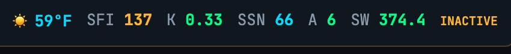
| What it is | How to read it | |
|---|---|---|
| SFI | Solar Flux Index: the sun's radio output at 10.7 cm, a stand-in for how hard it's ionizing the upper atmosphere | Higher is better for HF, especially 15–10 m. About 70 is a quiet sun; 120+ good; 150+ excellent. |
| K | Planetary K-index: how disturbed Earth's magnetic field is, 0–9, over 3 hours | Low is better. 0–2 quiet. 4 and up turns red: absorption, noise, aurora. |
| SSN | Sunspot number | Rises and falls with SFI over the 11-year solar cycle. |
| A | A-index: the whole day's geomagnetic disturbance in one number | Under 10 green, 10–19 amber, 20+ red. |
| SW | Solar wind speed, km/s | Under 500 green, 500–699 amber, 700+ red. Fast wind stirs up the field. |
| WORD | Geomagnetic field summary from N0NBH (HamQSL) | QUIET is green. ACTIVE or any STORM is red. |
Rule of thumb: high SFI and low K is a good HF day. This morning: SFI 137, K 0.33. Good.
"DE" means this end
- FN20nc is your Maidenhead grid square. FN is a 20°×10° field, 20 is a 2°×1° square, and "nc" narrows it to a few miles. Most of Lower Bucks is FN20.
- Latitude and longitude: every distance and heading is measured from here.
- 07:14 → 18:14: your sunrise and sunset, local time. The low bands improve after dark, and gray-line openings happen around these two times.
- Local weather. The arrow opens wind, humidity, pressure and alerts.
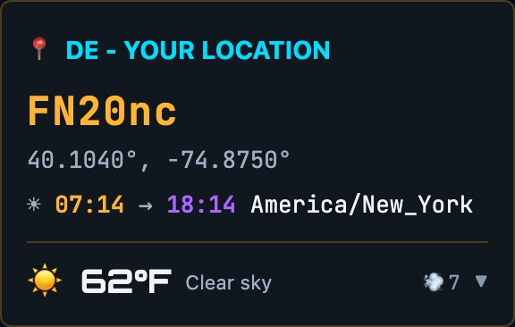
The station or place you're aiming at
- Local time at their end. 1:36 AM in Tokyo is worth knowing before you call.
- Beam Dir: the short-path heading from you to them. 332° from here to Japan: over the pole, not west across the Pacific.
- Distance along that great-circle path
- Their sunrise → sunset, in UTC
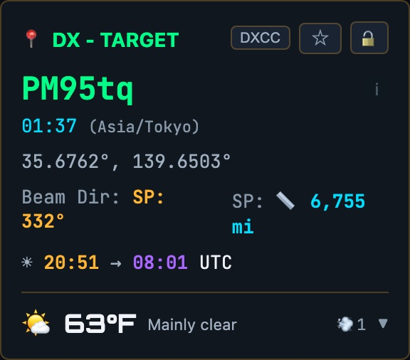
Reading the map
- The shaded side is night. Its edge is the gray line: low-band signals travel unusually far along it.
- ☀ marks where the sun is directly overhead; the moon icon, where the moon is.
- Each line is a spot: from the station that heard to the station heard, colored by band. Hover one for details.
- The band bar at the bottom filters the map to one band.
- The ticker runs DX news headlines.
The same band colors are used everywhere in the app.
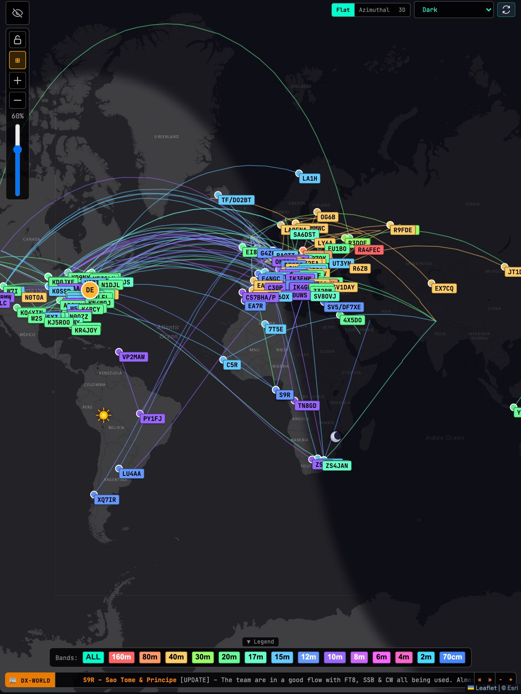
Three ways to draw the world


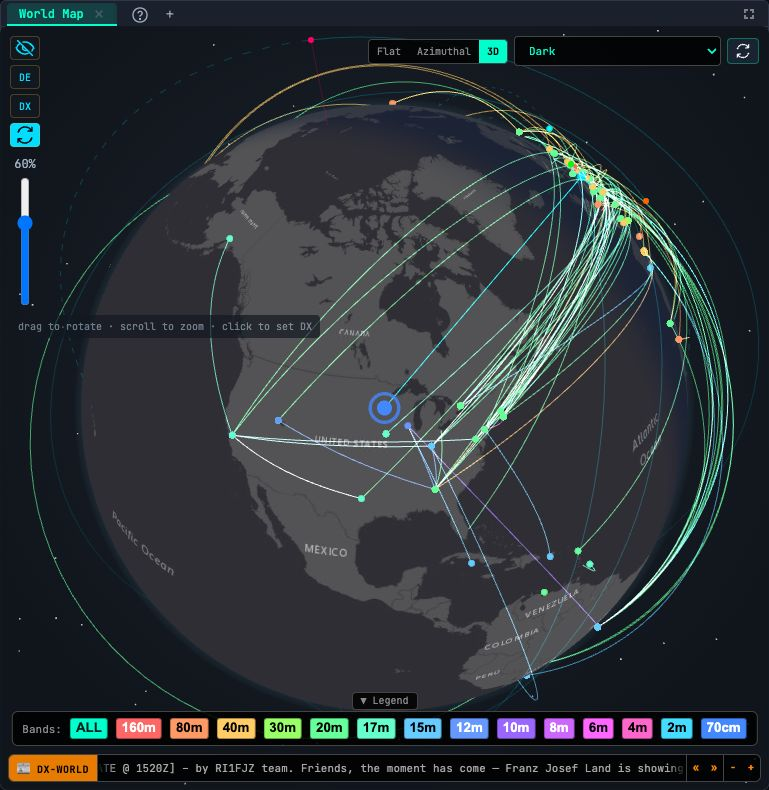
Top of the map: projection and basemap. Left toolbar: zoom, lock, show/hide callsigns, and a slider for how dark the night side is drawn.
The sun, live
Four views: the button at top right flips them, ▶ rotates them automatically.
- Image: NASA's Solar Dynamics Observatory. Dark patches are coronal holes, the source of fast solar wind that reaches us 2–4 days later.
- Indices: the header numbers with a rating, a trend, and a 24 h K forecast
- X-ray: solar flares (next slide)
- Lunar: moon phase and position, for EME
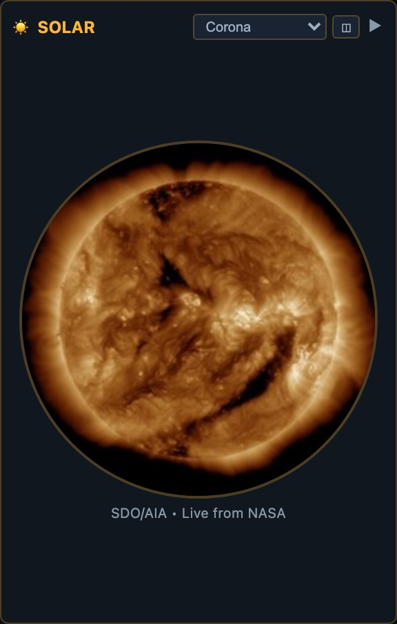
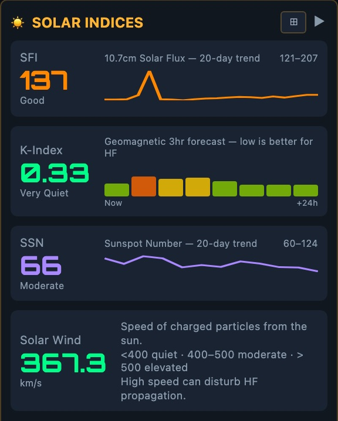
Flares and sudden blackouts
Satellites measure the sun's X-rays. Flares are graded by peak strength, and each class is 10× the one before:
B → C → M → X
- B and C: background, little or no effect
- M and X: an HF radio blackout on the sunlit side of Earth, starting within minutes and lasting minutes to hours
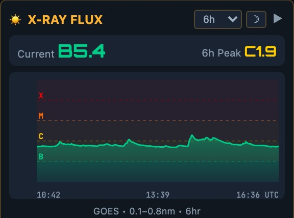
Which bands, to there, and when
- A prediction for the path from your DE to your DX, not a general forecast
- Rows are bands, columns are the 24 hours (UTC). The white box is now.
- Color is reliability: green likely, yellow/orange possible, red/dark unlikely.
- Uses the ITU's HF model (ITU-R P.533, the physics behind VOACAP), calculated in your browser with your mode, power and antenna (default SSB, 100 W).

MUF, LUF, and the mode you're using
- MUF, maximum usable frequency: the highest frequency the ionosphere will typically bend back to earth on this path right now. Much above it, the signal goes into space.
- LUF, lowest usable frequency: below it, daytime absorption eats the signal.
- Bands between the two can work; signal strength decides whether they do. Right now, only 20 and 30 m show any chance.
- Bars view: the same prediction for this hour only, best band first.
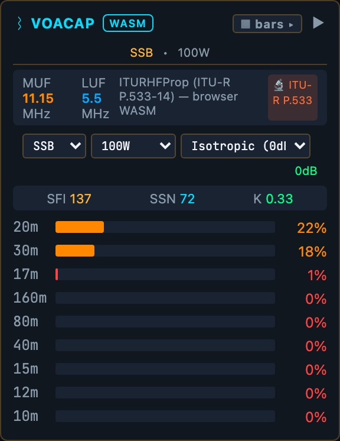
General band conditions
- From N0NBH's widely used HamQSL report: each band rated GOOD / FAIR / POOR, for day and for night
- VHF conditions: aurora and sporadic-E openings on 6 m and up
- Noise: expected background noise, in S-units
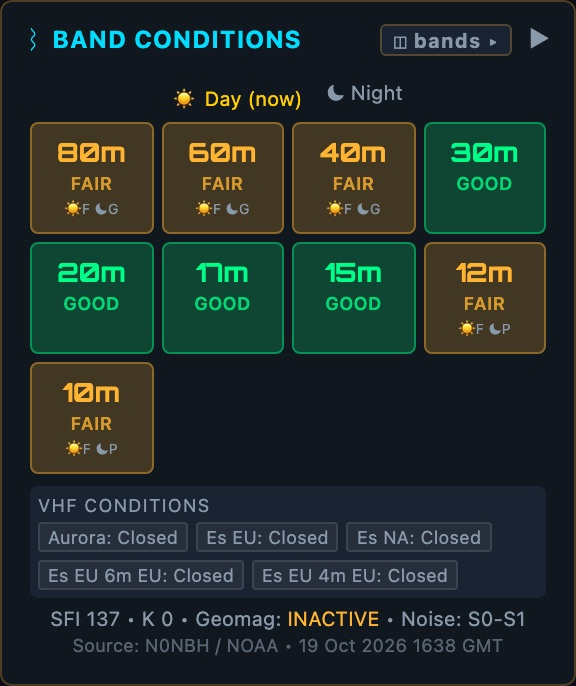
Who's being heard, right now
A spot is a report that a station was heard on a frequency. Spots come from other hams and from automatic receivers (the Reverse Beacon Network, RBN), shared over the worldwide DX cluster network.
Each row: frequency (colored by band) · callsign · mode · de the spotter · how long ago
- Click a row to make it your DX target and show it on the map.
- 🎧 listens on a nearby web receiver (KiwiSDR), already tuned to it.
- "50/162": 50 rows shown of 162 spots received. Search and filters narrow it.
With your log imported: NEW new country · BAND new on this band · DUPE already worked · ✓ worked on another band or mode
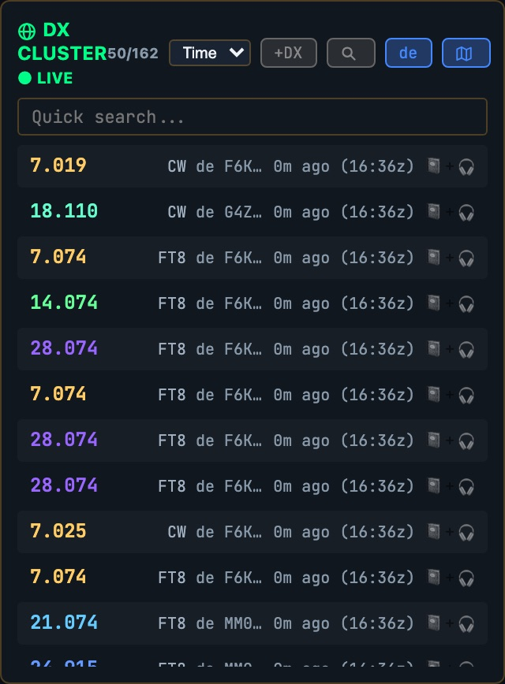
Who hears you
Digital-mode software (WSJT-X, JTDX and others) uploads every station it decodes to PSKReporter.info. This pane pulls the reports involving your callsign.
- ▲ Heard: stations that decoded your signal
- ▼ Hearing: stations you decoded
- Numbers are signal-to-noise in dB. A gold ★ means you hear each other: a contact is likely.
- The drop-down sets how many minutes of reports to keep.
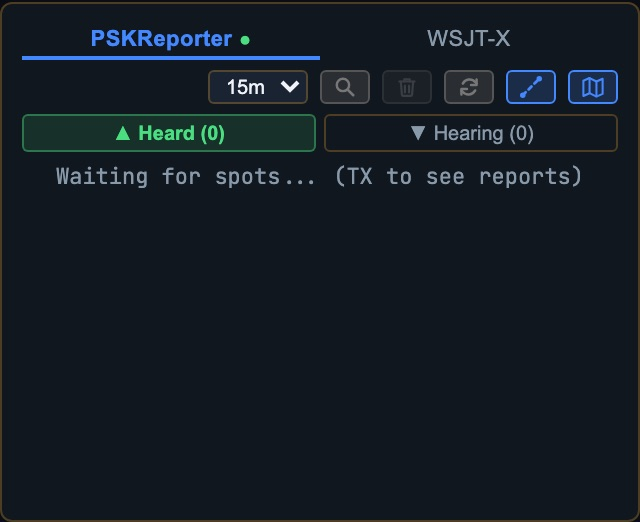
On-the-air programs
POTA
Parks on the Air: operating portable from a park
SOTA
Summits on the Air: portable from a mountaintop
WWFF
World Wide Flora & Fauna: nature reserves
WWBOTA
Worldwide Bunkers on the Air: historic bunkers
Each row: activator · reference (US-11290 is a park ID; hover for its name) · frequency · time (UTC). The second line is the spot's comment: mode, signal report, or "RBN" if a skimmer heard them.
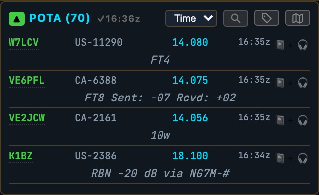
What's on the calendar
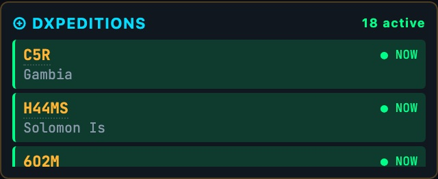
DXpeditions: teams operating from rare places, from NG3K's announced-DXpeditions calendar. ● NOW means on the air today; SOON means coming up. This morning: C5R in The Gambia.
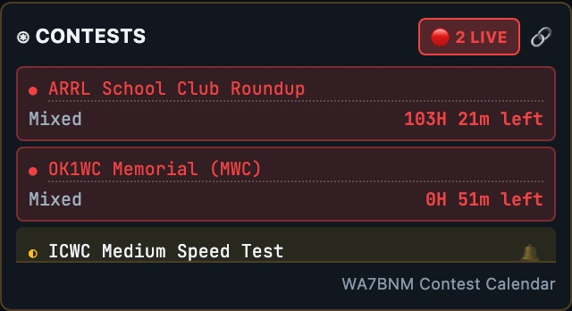
Contests: from the WA7BNM Contest Calendar. LIVE ones show the time left; upcoming ones show when they start. Click a name for details.
Ten seconds before you turn the radio on
-
Header: SFI up and K low? High flux and a quiet field: the higher bands are worth a look.
-
X-ray: any M or X flare? If the day side is blacked out, wait, or use the night-side bands.
-
Propagation: set a DX target and read the chart Which band, and what time, for the place you want.
-
Map and cluster: is anyone actually getting through? Lines on the map are proof. Filter to the band you picked.
-
Listen: 🎧 on a spot, then tune the radio Parks and summits are the easiest contacts on any given day.
The icons down the left edge
Each one opens Settings at that tab.
Station
Callsign, grid, units, time zone
Display
Layout, theme, text size, 12/24 h
Map Layers
MUF map, aurora, weather radar, grid squares and more
Satellites
Which satellites to track, and their passes
Alerts
A sound or notification when something you want shows up
Profiles
Save setups and share them with a code
Integrations
Logbook services, QRZ and others
Help
The full user manual, built in
Shortcut: Ctrl+K (⌘+K on a Mac), then type what you want: "aurora", "classic", "satellites".
Other layouts, and many more panes


Also: a logbook that imports your ADIF file and drives the NEW/BAND tags, satellite passes, weather and more. With an optional helper program, clicking a spot can tune your radio; ask me after if you want to set that up.
Install it like an app
iPhone / iPad
In Safari: Share → Add to Home Screen
Android
In Chrome: ⋮ menu → Add to Home screen or Install app
Windows / Mac
In Chrome or Edge: the install icon at the right of the address bar
Want a dedicated screen in the shack? An old laptop works, or a Raspberry Pi: one setup script turns it into a full-screen display that starts on boot.
openhamclock.com
Manual: Settings → Help · Questions later: chris@cjhlighting.com
Happy to help anyone set it up after
the meeting.
Questions?